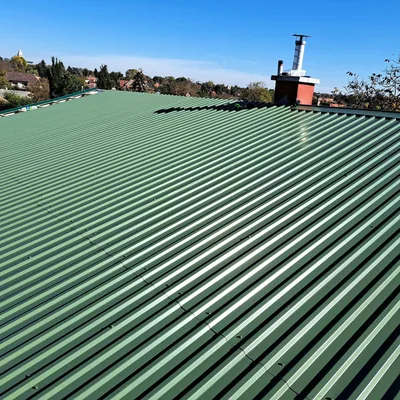
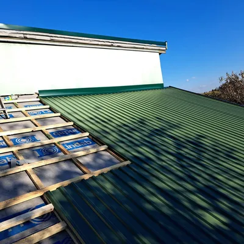
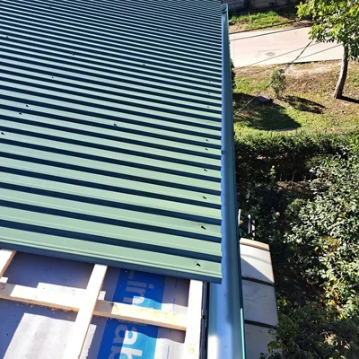
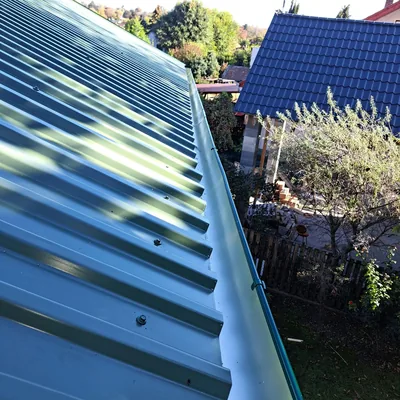
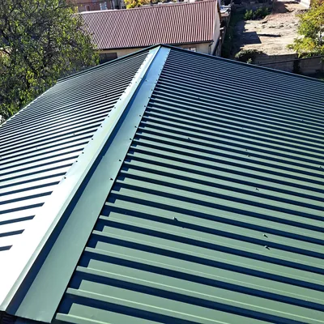
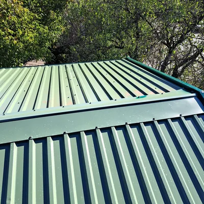
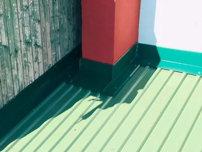

Projekt 09 · Saját munkafotók
Zöld trapézlemezes tető
Lemezfedés, gerinc- és falszegélyek, valamint a kémény körüli bádogozás egy tetőn.


01A zöld lemezfedés áttekintése

02Lemezfedés készítése a lécezett tetőn

03Tetőszél és ereszcsatlakozás

04A lemezfedés az eresz mentén

05Gerincszegély a két tetősík között

06Lemezek és szegélyek csatlakozása

07Kémény körüli bádogozásBESZÉLJÜK ÁT A KÖVETKEZŐ MUNKÁT
Hasonló munkát tervez?
A részletekről és a vállalási időpontról telefonon egyeztetünk.